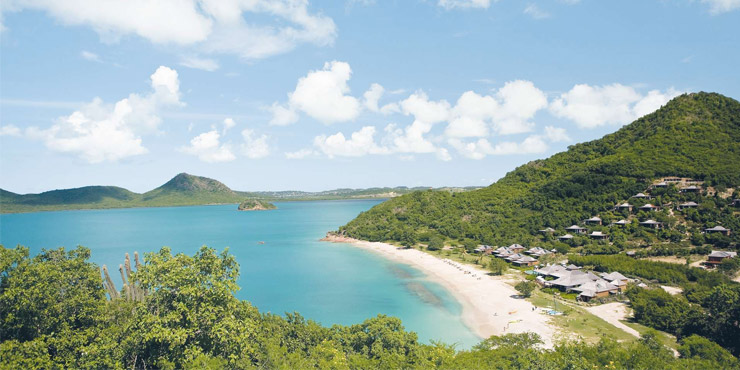
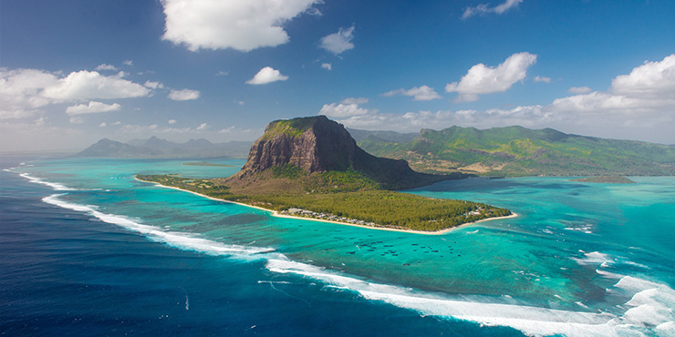
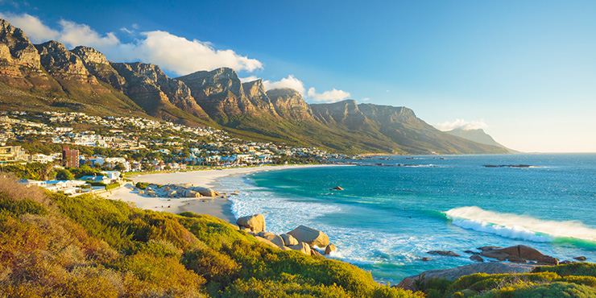
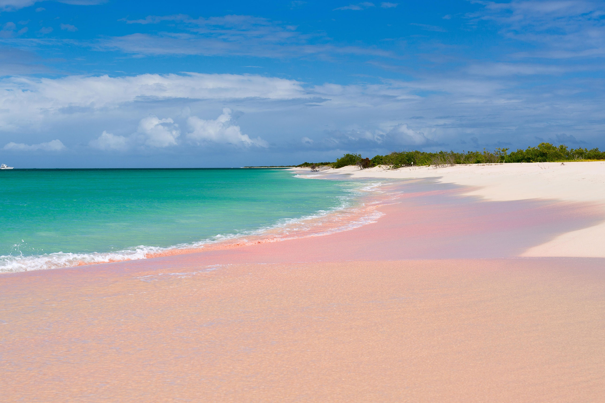
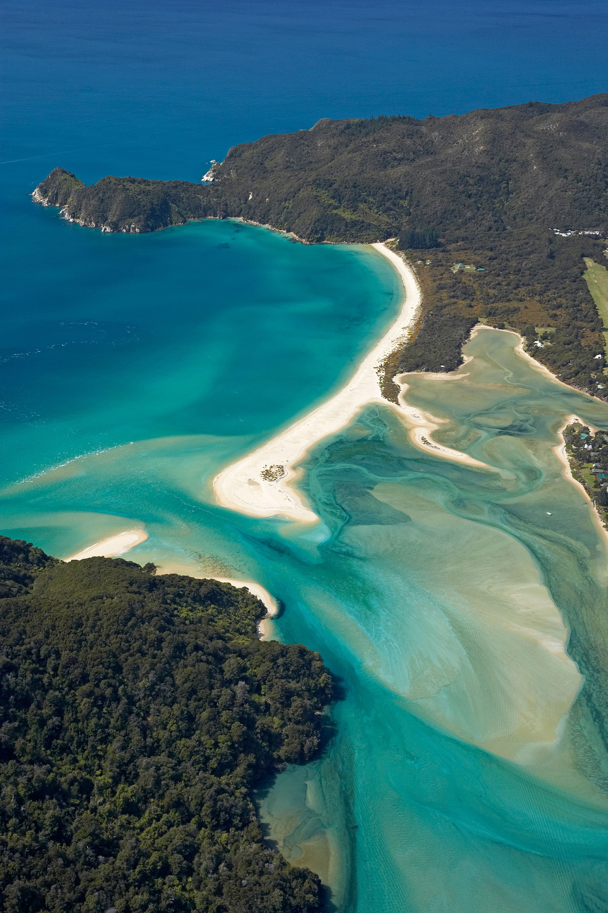
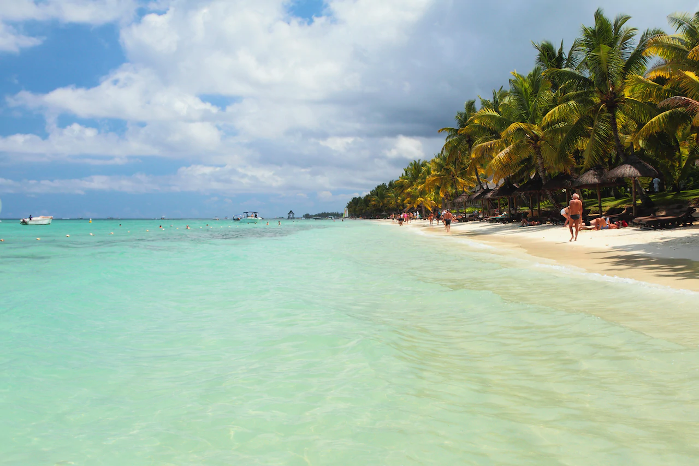

<!DOCTYPE html>
<!--[if lt IE 7]>      <html class="no-js lt-ie9 lt-ie8 lt-ie7"> <![endif]-->
<!--[if IE 7]>         <html class="no-js lt-ie9 lt-ie8"> <![endif]-->
<!--[if IE 8]>         <html class="no-js lt-ie9"> <![endif]-->
<!--[if gt IE 8]>      <html class="no-js"><!--<![endif]-->
<html>
    <head>
        <meta charset="utf-8">
        <meta http-equiv="X-UA-Compatible" content="IE=edge">
        <title>Ranked: The world's best beaches </title>
        <meta name="description" content="">
        <meta name="viewport" content="width=device-width, initial-scale=1">
        <link rel="stylesheet" href="https://cdn.jsdelivr.net/npm/bootstrap@4.3.1/dist/css/bootstrap.min.css" integrity="sha384-ggOyR0iXCbMQv3Xipma34MD+dH/1fQ784/j6cY/iJTQUOhcWr7x9JvoRxT2MZw1T" crossorigin="anonymous">
        <link rel="stylesheet" href="path/to/font-awesome/css/font-awesome.min.css">
        <link rel="stylesheet" href="TravelBlogv1.css">
        <link rel="stylesheet" href="blogpostpage1.css">
        <link rel="preconnect" href="https://fonts.googleapis.com">
        <link rel="preconnect" href="https://fonts.gstatic.com" crossorigin>
        <link href="https://fonts.googleapis.com/css2?family=Smooch+Sans:wght@300&display=swap" rel="stylesheet">
        <body id="home">
        </body>
         <!--- All the code to do with navigation bar here-->
	<nav class="navbar navbar-expand-lg navbar-light style=" background-color: #e3f2fd;>
    <div class="container-fluid">
    <a class="navbar-brand" href="#">
        </a>
    <button class="navbar-toggler" type="button" data-bs-toggle="collapse" data-bs-target="#navbarScroll" aria-controls="navbarScroll" aria-expanded="false" aria-label="Toggle navigation">
      <span class="navbar-toggler-icon"></span>
    </button>
    <div class="collapse navbar-collapse" id="navbarScroll">
      <ul class="navbar-nav me-auto my-2 my-lg-0 navbar-nav-scroll" style="--bs-scroll-height: 100px;">
        <li class="nav-item">
          <a class="nav-link active" aria-current="page" href="TravelBlog.html">Home</a>
        </li>
        <li class="nav-item">
          <a class="nav-link" href="Meet-the-team.html">About</a>
        </li>
        <li class="nav-item dropdown">
          <a class="nav-link dropdown-toggle" href="#" id="navbarScrollingDropdown" role="button" data-bs-toggle="dropdown" aria-expanded="false">
            Adventures
          </a>
          <ul class="dropdown-menu" aria-labelledby="navbarScrollingDropdown">
            <li><a class="dropdown-item" href="#">UK</a></li>
            <li><a class="dropdown-item" href="#">Europe</a></li>
            <li><a class="dropdown-item" href="#">World</a></li>
          </ul>
        </li>
        </ul>
      </div>
    </div>
  </nav>
<!--- Nav bar code ends here-->

        <h2><b><center>Ranked: The World's Best Beaches</center></b></h2>
        <div class="tagline">
            Because we deserve the best...
        </div>
    </div>
           <!-- carousel -->
           <div class="divclass5"></div>
           <div id="carouselExampleIndicators" class="carousel slide" data-ride="carousel">
            <ol class="carousel-indicators">
              <li data-target="#carouselExampleIndicators" data-slide-to="0" class="active"></li>
              <li data-target="#carouselExampleIndicators" data-slide-to="1"></li>
              <li data-target="#carouselExampleIndicators" data-slide-to="2"></li>
            </ol>
            <div class="carousel-inner">
              <div class="carousel-item active">
                
              </div>
              <div class="carousel-item">
                
              </div>
              <div class="carousel-item">
                
              </div>
              <div class="carousel-item">
                
              </div>
            </div>
            <a class="carousel-control-prev" href="#carouselExampleIndicators" role="button" data-slide="prev">
              <span class="carousel-control-prev-icon" aria-hidden="true"></span>
              <span class="sr-only">Previous</span>
            </a>
            <a class="carousel-control-next" href="#carouselExampleIndicators" role="button" data-slide="next">
              <span class="carousel-control-next-icon" aria-hidden="true"></span>
              <span class="sr-only">Next</span>
            </a>
        <script src="" async defer></script>
    </div>
        <!--Nav Bar Code ends here-->
        <div class="divclass7"></div>
    </body>
</html>
    </head>
    <body>
        <!--[if lt IE 7]>
            <p class="browsehappy">You are using an <strong>outdated</strong> browser. Please <a href="#">upgrade your browser</a> to improve your experience.</p>
        <![endif]-->
        <h2><b><center>Pink Sand Beach, Barbuda</center></b></h2>
        <div class=“page-image">
            <p id="one"></p>
            <div>
                <div class="sandbeach-image">
                  <p id="d-image"></p>
                <div style="float: left">
                    
                </div>
                <div>
                    <div class="dickenson-text">
                      <p id="d-text">For all those travelling instagrammers wanting to get that perfect photo, Pink Sand Beach is endlessly photogenic and surprisingly less crowded than most Caribbean beaches. Located in Barbuda, the beach glows with a pink hue which you may largely be able to enjoy by yourself. The only drawback is that there are sparse public facilities available. </p>
                      <p id="d-text2"> Located around 30 miles north of Antingua, this is known as the pinkest of all Caribbean beaches due to the high levels of coral reefs along the coast</p>
                </div>
                </div>
            </div>
            </div>
            <br>
            <div>
            <div class="heading3">
            <h3><b><center>Awaroa, South Island, New Zealand</center></b></h3>
          </div>
          </div>
            <div class=“nz-image">
                <p id="three"></p>
                <div>
                    <div class="newz-image">
                      <p id="d-image"></p>
                    <div style="float: right">
                        
                    </div>
                    <div>
                        <div class="newz-text">
                          <p id="newz-text">Located in Abel Tasman National Park, Awaroa is located in native bush and sparking seas. Getting to this beach is not the easiest,  most visitors come either by water or on foot through the luscious National Park.  </p>
                          <p id="new-text2"> Known as 'the people's beach', this was previously a privately-held beachfront which £39,000 Kiwis donated so that this could be gifted to the country's Department of Conservation</p>
                    </div>
                    </div>
                </div>
                </div>
<br/>
<br> 
<div>
  <div class="heading4">
    <h3><b><center>Trou Aux Biches, Mauritius</center></b></h3>
  </div>
  </div>
    <div class=“mru-image">
        <p id="four"></p>
        <div>
            <div class="mr-image">
              <p id="m-image"></p>
            <div style="float: left">
                
            </div>
            <div>
                <div class="mru-text">
                  <p id="mru-text1">Located in a small town on the northern coast of Mauritius, this beach is one of the most beautiful on the island. Awarded the World's Leading Beach Destination 2011, this beach is surrounded by many tourist resorts and boutique hotels.</p>
                  <p id="mru-text2">3km of beach lined with coconut trees, white sand beach surrounded by crystal clear turquoise water making this a haven for swimming.  </p>
            </div>
            </div>
        </div>
        </div>
</div>
<br/>
</html>
</div>

<script src="https://code.jquery.com/jquery-3.3.1.min.js" integrity="sha256-FgpCb/KJQlLNfOu91ta32o/NMZxltwRo8QtmkMRdAu8=" crossorigin="anonymous"></script>
<script src="https://cdnjs.cloudflare.com/ajax/libs/popper.js/1.14.7/umd/popper.min.js" integrity="sha384-UO2eT0CpHqdSJQ6hJty5KVphtPhzWj9WO1clHTMGa3JDZwrnQq4sF86dIHNDz0W1" crossorigin="anonymous"></script>
<script src="https://stackpath.bootstrapcdn.com/bootstrap/4.3.1/js/bootstrap.min.js" integrity="sha384-JjSmVgyd0p3pXB1rRibZUAYoIIy6OrQ6VrjIEaFf/nJGzIxFDsf4x0xIM+B07jRM" crossorigin="anonymous"></script>
<!-- our custom javascript -->
